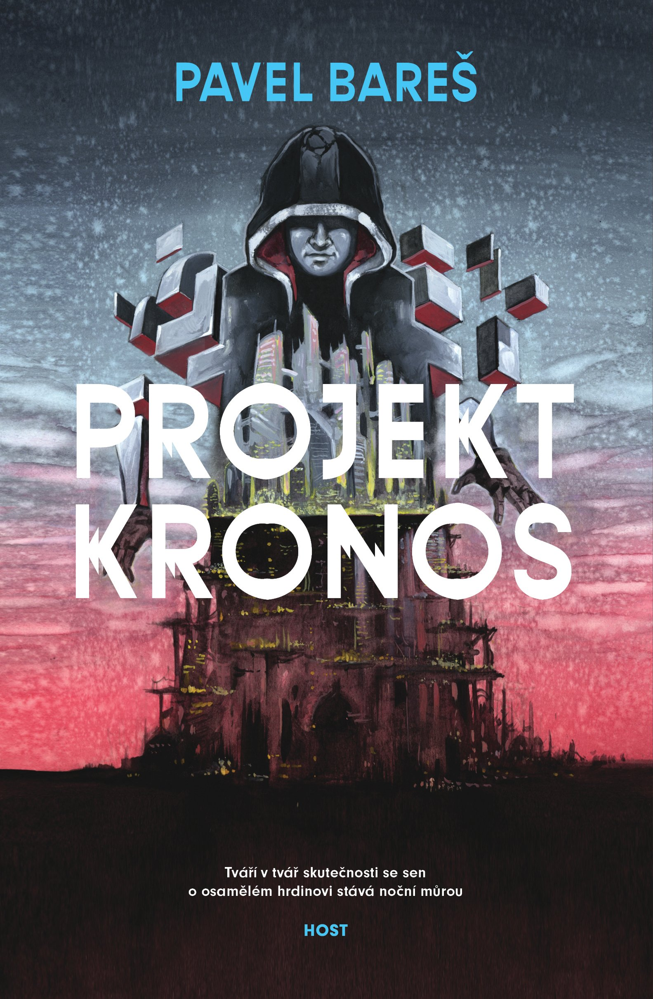

Autor: Pavel Bare¹
®ánr: Sci-fi
Hodnocení: + 2
Pí¹e se rok 2052 a to málo, co po válce ze svìta zbylo, halí ¹ero nukleární zimy. Attiona City, jednu z posledních výsep lidské civilizace, zevnitø po¾írá záhadná epidemie a spoleèenské rozkoly. Zatímco prominentní obèané v horních èástech mìsta se vzpamatovávají z váleèných hrùz, ménì ¹»astní obyvatelé spodního Downtownu je poøád pro¾ívají. Narùstající exkluze a pùtky konkurenèních mafií jsou ale pouze prvními výstøely do tmy pøedznamenávajícími obèanskou válku. Mìsto ov¹em není tak bezbranné, jak by se na první pohled mohlo zdát.
Projekt Kronos pootevírá dveøe, které lákají do zcela nového svìta, který je sice ponìkud neutì¹ený, ale pozoruhodným zpùsobem doká¾e ve ètenáøi vyvolat touhu uchopit ho v¹emi smysly. Nezbývá tedy ne¾ doufat, ¾e Pavel Bare¹ tyto dveøe otevøe dokoøán a vyslou¾í si tak vstup mezi legendy èeské fantastiky. Na¹lápnuto má zatím dobøe.
- sarden.cz
Kateøina Foøtová

Projekt Kronos je sice autorovým literárním debutem, av¹ak velmi vydaøeným a neskuteènì moc propracovaným. Setkáváme se s peèlivì vybudovaným fiktivním svìtem, av¹ak dìsivì známým a skuteèným, svìtem, který je zasazen do doby v letech 2052, tedy doby, které se ètenáøi je¹tì s nejvìt¹í pravdìpodobností do¾ijí. Prostøedí, které autor vykreslil, je temné, av¹ak mù¾e se klidnì stát realitou.
Robert Potocký

Zajímavé, inovativní, procítìné sci-fi. My¹lenka, ¾e mìsto ¾ije a urèuje své ochránce je skvìlá, by» mi pøijde, ¾e zde v prvním díle nebyl vyu¾it potenciál. Ale vìøím, ¾e v dal¹í knize se to doplní. Kniha se èetla pøíjemnì, plynule, jen trochu to pøeskakování na úvodu mezi postavami bylo nepøehledné. Také nìkteré pasá¾e byly výborné oproti jiným, slab¹ím. A agentura co se stará o sirotky, nemohu si pomoct, pøi¹lo mi to jako kli¹é.